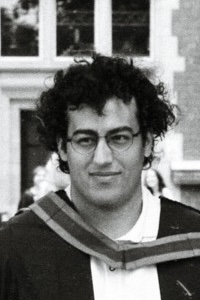

GitHub · Google Scholar · LinkedIn
I am a PhD candidate at the University of Technology Sydney, working in quantum complexity and algorithms under the supervision of Mick Bremner, Ryan Mann, and Sam Elman.
My research explores how the physical structure of quantum systems influences their computational complexity. In particular, I study which features of a Hamiltonian — such as locality, geometry, stoquasticity, and the structure of its ground state — determine whether a problem can be solved efficiently by classical or quantum algorithms.
Originally trained as a theoretical physicist, I am interested in problems that sit at the boundary of physics, computer science, and mathematics, where physical intuition and algorithmic techniques can be combined to better understand quantum systems.
My research focuses on Hamiltonian Complexity Theory including:
During my PhD, I created the Hamiltonian Jungle — an online repository for classifying known Hamiltonian Complexity problems!
My background is in Theoretical Physics.
I graduated from the University of Leeds in 2022 with First Class Honours degrees, MPhys and BSc in Theoretical Physics.
I specialised in Quantum Optics, focusing on using a new local position space field theory for photons.
My Master's thesis studied locally acting mirror Hamiltonians using said theory.
This work led to a research paper studying the Abraham-Minkowski controversy, which was featured as an Editor's Suggestion in Physical Review A!
My research is supported by the Sydney Quantum Academy, commencing in April 2023 and running until 2027.
Personal e-mail:
gabrielwaite1999@outlook.com
Student e–mail:
gabriel.waite@student.uts.edu.au
My research focuses on Hamiltonian Complexity theory.
The partition function of a quantum system encodes its thermodynamic properties, yet approximating it is generally intractable. For what kinds of quantum systems can we efficiently approximate the partition function, and how does this depend on the system's structure? A weakly interacting quantum system comprises a free part and a perturbative interaction with a small coupling strength. We proved that the partition function of such a system can be efficiently (deterministically) approximated to relative-error in polynomial time at any temperature via applications of the cluster expansion method. Additionally, efficient classical sampling from the Gibbs distribution of such a system is possible at arbitrary temperature which contrasts previously proposed quantum algorithms for similar tasks. Interestingly, the algorithm can be extended to fermionic systems in the strongly correlated regime, thus representing the importance of considering the full parameter space of structural features when classifying the complexity of quantum systems.
Knowing that a solution exists for a constraint satisfaction problem is one thing. Being able to count (even approximately) how many solutions there are is another problem entirely, and typically a much harder one. Yet in regimes where constraints are individually mild and weakly dependent on one another, the Lovász Local Lemma guarantees existence of satisfying assignments. This raises the question of whether this same mild-dependence structure also makes approximate counting tractable, i.e., can we efficiently approximate the dimension of the ground space of a local Hamiltonian under LLL-type conditions? For local commuting projectors, and for non-commuting projectors under natural stability conditions, we obtained fully polynomial-time approximation schemes, showing that the same structural regime that guarantees existence also enables efficient counting. As a bonus, these results recover efficient approximation algorithms for classical constraint satisfaction as special cases, and the dimension of satisfying subspaces of quantum satisfiability formulae.
Does ground-state energy estimation become easier if you have a guiding state — a state that has some non-trivial overlap with the ground state?
This question is motivated by the fact that existing algorithms used in practice often construct trial states that are then used to guide the search and hopefully converge to an appropriate estimate.
The Guided Local Hamiltonian problem formalises this idea by augmenting the input to the Local Hamiltonian problem with a classical description of a guiding state.
Prior work had explored only a narrow slice of possible guiding state families, leaving the robustness of quantum advantage claims in this setting largely untested.
We systematically expanded this parameter space, developing a general hardness framework that exposes how the problem's complexity shifts as the guiding state varies — turning knobs that prior work had left fixed.
Our central finding is that quantum advantage here can be fragile as it depends sensitively on how the guiding state is described: quantum tractability demands a description that enables uniform state preparation and classical tractability demands a description that enables efficient classical query and sampling access to the guiding state.
To address this fragility, we identified a Goldilocks zone to describe a regime of parameters where the input models for classical and quantum algorithms are directly comparable, thus placing quantum advantage claims on fairer ground.
Local stoquastic Hamiltonians are already amenable to classical simulation techniques, therefore, does adding a guiding state make ground-state energy estimation tractable? The complexity classifications depend delicately on the stoquastic structure. For stoquastic Hamiltonians built by pinning a site of a general local Hamiltonian to a fixed state, I prove the guiding state provides no relief: the problem remains as hard as in the fully quantum guided setting. For genuinely general local stoquastic Hamiltonians, I prove the complexity drops, but not far enough to reach efficient classical algorithms, even on lattice geometries. Together, amenability to classical techniques and the presence of a guiding state are simply not enough, on their own or in combination, to make the problem classically easy.
Hardness results in quantum complexity often feel remote from physical reality, but what if you already knew something about the answer? What if the structure of the ground state itself was handed to you, in the form of an efficient classical description of its amplitudes — the kind of access that underlies modern quantum learning algorithms like classical shadow tomography? This is the question behind the succinct state variant of the Local Hamiltonian problem, where the ground state's amplitudes are efficiently accessible via a classical query algorithm. Strikingly, the result reveals a clean separation: while the ground state remains hard to find, its energy becomes classically verifiable — and we show this optimally, improving the prior locality bound from 6-local to 2-local via a classification of succinct state families through algebraic amplitude encodings. Our results reveal where the complexity classification transition boundary occurs for this problem, and open new complexity-theoretic questions at the interface with quantum learning theory.
Local stoquastic Hamiltonians are free of the quantum sign problem that arises in general quantum systems; this structural property that makes them amenable to quantum Monte Carlo and classical simulation techniques. But does this structure actually make ground-state energy estimation any easier? Does constraining a stoquastic system to live on a physical lattice tip the balance toward classical tractability? We show that the answer is no: even on the simplest 2D lattices, and without inflating the local dimension, estimating the ground-state energy of stoquastic systems remains as hard as the hardest problems in a complexity class known as StoqMA (stoquastic Merlin-Arthur). The key insight is a gadget construction, relying on perturbation theory, that embeds arbitrary local stoquastic Hamiltonians into lattice-constrained systems while preserving stoquasticity throughout. This result closes off a natural and well-motivated route to classical simulation and sharpens the question of what, if anything, makes stoquastic systems tractable.